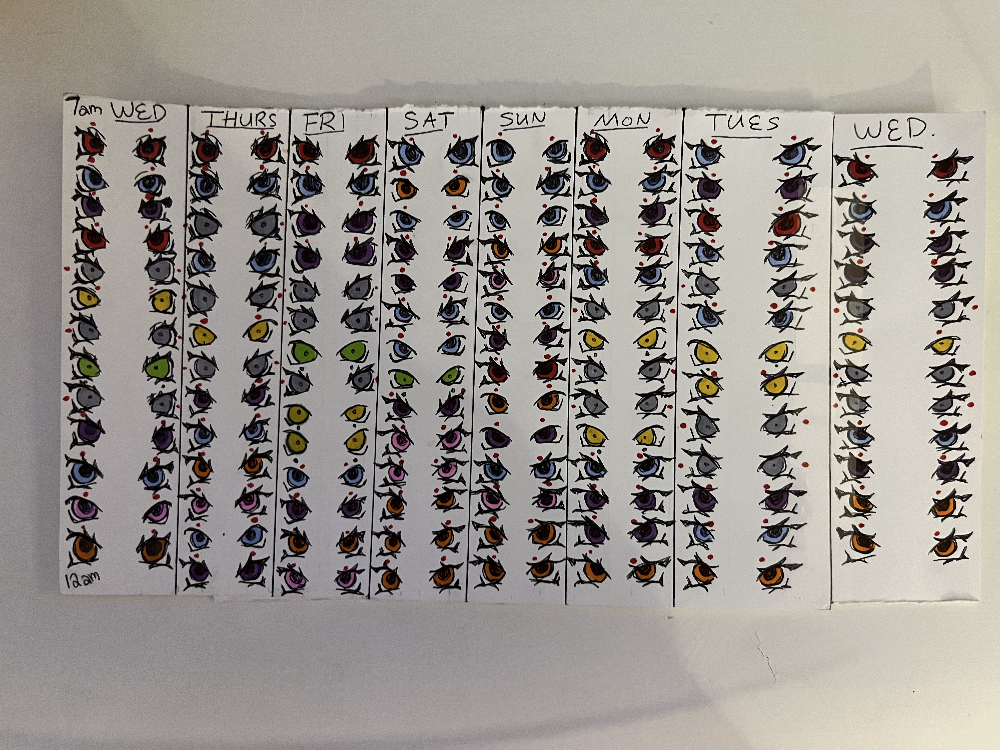
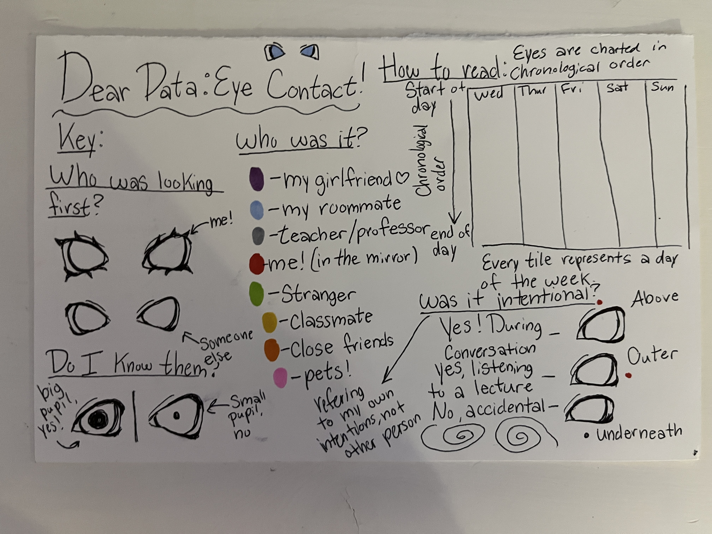
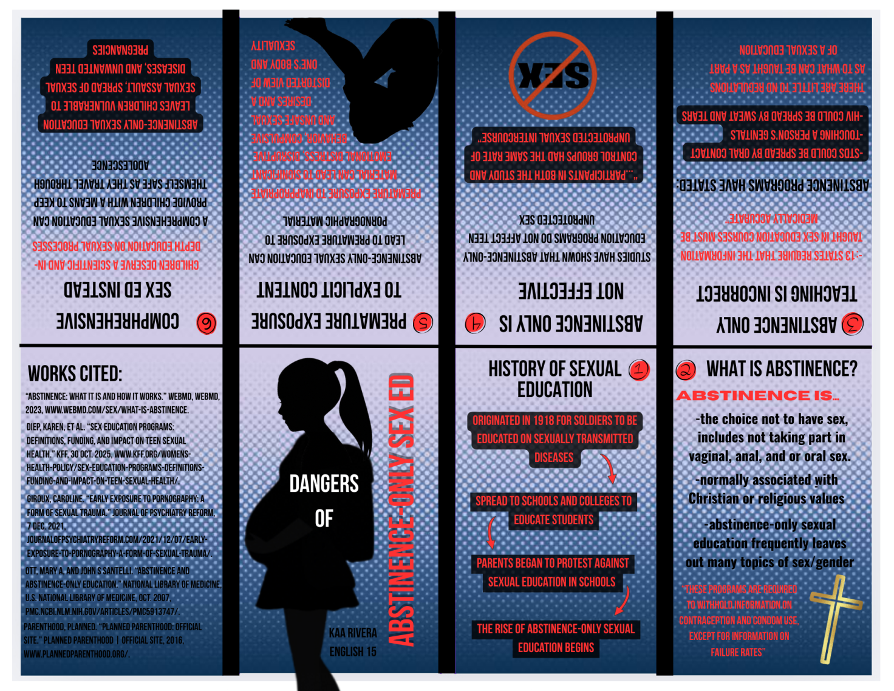

As a part of my courses as a DIGIT student, I am often assigned creative/illustration
based projects that require me to use my artistic abilities. Here I'll display some of
the artworks that I've completed as a part of a required course/assignment.
Dear Data Project: February 2026


A project in which I visually recorded the instances of eye contact over a
one week period. A key is provided to read the data.
Enlglish Recast and Rationale Zine: December 2026

A Zine recreation based on my essay arguing for sex education in
schools.
These changes will be updated to my personal repo on : Github